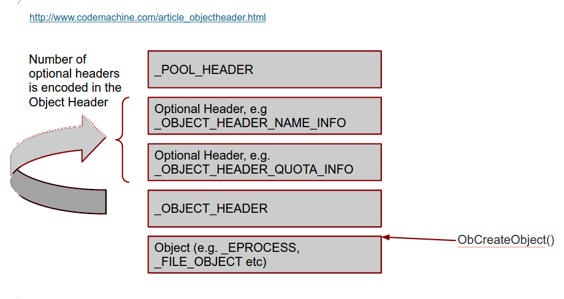

Rekall adding windows 10 support
This article was copied from the Rekall Forensics blog, posted by Michael Cohen on 2015-06-10. Copied with permission for historical preservation.
As is widely known, the new release of Windows 10 is imminent. Microsoft is advertising this release and urging customers to upgrade. This means that we should expect so see more and more Windows 10 machines that require Rekall's advanced memory analysis!
Each time a new version of Windows is released, it's a little bit like Christmas for me - full of surprises, you never really know what you are going to get! Microsoft did not disappoint this time either. There are some differences in Windows 10 that require Rekall to vary its approach to certain analysis techniques. It has been fun to make Rekall work with Windows 10 and this post will cover some of the interesting differences between Windows 10 and earlier versions. I will also explain some of the changes we implemented in Rekall.
To start off I installed Windows 10 preview (en_windows_10_pro_insider_preview_10074_x64_dvd_6651360.iso) on Virtual Box. Once the install was done, I downloaded Rekall from the release page and used winpmem_2.0.1.exe to acquire an AFF4 memory image together with the pagefile. So far, there were no surprises! Winpmem just worked out the box. I then continued to work on the image.
When I ran Rekall on this image, the profile was not found in the profile repository but this is not really a problem. Recent versions of Rekall can just fetch their own profiles from the Microsoft Symbol server by themselves (you can see this if you specify the -v flag):
$ rekal -v -f ~/images/win10.aff4
....
DEBUG:root:Will detect profile using these Detectors: nt_index,osx,pe,rsds,ntfs,linux
DEBUG:root:Opened url https://raw.githubusercontent.com/google/rekall-profiles/master/v1.0/inventory.gz
DEBUG:root:Opened url http://profiles.rekall-forensic.com/v1.0/inventory.gz
....
DEBUG:root:Skipped profile nt/GUID/2F35AA77F3484FE59775E55B7FF1EDE61 from https://raw.githubusercontent.com/google/rekall-profiles/master (Not in inventory)
DEBUG:root:Skipped profile nt/GUID/2F35AA77F3484FE59775E55B7FF1EDE61 from http://profiles.rekall-forensic.com (Not in inventory)
DEBUG:root:Will build local profile nt/GUID/2F35AA77F3484FE59775E55B7FF1EDE61
Trying to fetch http://msdl.microsoft.com/download/symbols/ntoskrnl.pdb/2F35AA77F3484FE59775E55B7FF1EDE61/ntoskrnl.pd_
ERROR:root:Error: HTTP Error 404: Not Found
Trying to fetch http://msdl.microsoft.com/download/symbols/ntkrnlpa.pdb/2F35AA77F3484FE59775E55B7FF1EDE61/ntkrnlpa.pd_
ERROR:root:Error: HTTP Error 404: Not Found
Trying to fetch http://msdl.microsoft.com/download/symbols/ntkrpamp.pdb/2F35AA77F3484FE59775E55B7FF1EDE61/ntkrpamp.pd_
ERROR:root:Error: HTTP Error 404: Not Found
Trying to fetch http://msdl.microsoft.com/download/symbols/ntkrnlmp.pdb/2F35AA77F3484FE59775E55B7FF1EDE61/ntkrnlmp.pd_
Extracting cabinet: /tmp/tmpo9ZU84/ntkrnlmp.pd_
extracting ntkrnlmp.pdb
All done, no errors.
DEBUG:root:Opened url https://raw.githubusercontent.com/google/rekall-profiles/master/v1.0/mspdb.gz
DEBUG:root:Adding mspdb to local cache.
INFO:root:Loaded profile mspdb from Local Cache Directory:/tmp/.rekall_cache
WARNING:root:Profile nt/GUID/2F35AA77F3484FE59775E55B7FF1EDE61 fetched and built. Please consider reporting this profile to the Rekall team so we may add it to the public profile repository.
DEBUG:root:Opened local file /tmp/.rekall_cache/v1.0/nt/GUID/2F35AA77F3484FE59775E55B7FF1EDE61.gz
INFO:root:Loaded profile nt/GUID/2F35AA77F3484FE59775E55B7FF1EDE61 from Local Cache Directory:/tmp/.rekall_cache
DEBUG:root:Found _EPROCESS @ 0x225AA40 (DTB: 0x1AA000)
INFO:root:Detected ntkrnlmp.pdb with GUID 2F35AA77F3484FE59775E55B7FF1EDE61
DEBUG:root:Detection method rsds worked at offset 0x21128d0
----------------------------------------------------------------------------
The Rekall Memory Forensic framework 1.3.2 (Dammastock).
"We can remember it for you wholesale!"
This program is free software; you can redistribute it and/or modify it under
the terms of the GNU General Public License.
See http://www.rekall-forensic.com/docs/Manual/tutorial.html to get started.
----------------------------------------------------------------------------
[1] win10.aff4 00:45:18>
The Object Manager
The most important difference from a Memory analysis perspective is that
the Object Header's TypeIndex field is obfuscated. In order to
understand how this impacts Rekall, I will summarize quickly how the
Windows Object Manager works, and how we use this in Rekall.
The Windows kernel manages Objects (Please do not confuse this with
object oriented languages like C++ objects - kernel objects are not
really Object Oriented in the same sense of the word). An object is just
an entity that the kernel is responsible for managing (i.e. create,
destroy etc). There are many kernel objects, such
as Process, Thread etc. You can actually see the kernel objects by
running the object_types plugin:
[1] win10.aff4 00:08:34> object_types
Type Index Number Objects PoolType Name
-------------- ----- --------------- -------------------- ----
0xe0003484c5b0 2 53 NonPagedPoolNx Type
0xe0003485ea80 3 45 PagedPool Directory
0xe0003485d630 4 160 PagedPool SymbolicLink
0xe00034860c20 5 1182 PagedPool Token
0xe00034872c40 6 9 NonPagedPoolNx Job
0xe00034865d70 7 46 NonPagedPoolNx Process
0xe00034856440 8 682 NonPagedPoolNx Thread
...
Overall there are 48 different types of objects the Windows 10 kernel manages (you can see above how many objects of each type are outstanding as well as some statistics - e.g. we can see that there are 46 processes currently running).
The kernel has an array of _OBJECT_TYPE pointers located
at nt!ObTypeIndexTable, which contains one pointer for each type (this
is the meaning of the Index column above - it is just the index into
this array.).
When the kernel wants to allocate one of these object (e.g. create a new
process) it calls the object manager to allocate a new object of the
required type (e.g. an _EPROCESS) object. It's called the Object
manager because it is responsible for tracking and managing different
aspects of these objects. The object manager does this by adding
additional headers before the allocated header.

Figure 1. Object layout in the kernel pool
See more information in our workshop slides: the workshop slide deck.
So when we have a pointer to an _EPROCESS struct we know that before
that address there will be a an _OBJECT_HEADER struct, and before that
there is a variable number of optional headers. Before the optional
headers we find the _POOL_HEADER.
The first sign of trouble was a failure of
the handles and object_tree plugins which inspect the object
manager's objects. Here is the output ofobject_tree:
[1] win10.aff4 01:16:57> object_tree
_OBJECT_HEADER Type Name
-------------- -------------------- ----
0xc0018b625580 SymbolicLink SystemRoot-> \Device\BootDevice\Windows (2015-06-03 06:56:01+0000)
0xc0018b6e52d0 SymbolicLink Sessions-> (-)
0xc0018b625330 Token ArcName
0xe00035e54de0 WindowStation EFSInitEvent
0xe00034866d80 Timer PowerPort
0xe000354a4580 TmTm MicrosoftMalwareProtectionControlPortWD
0xc0018c065050 File LsaPerformance
0xc0018b6b54a0 Type Driver
This is very weird. The Type of many objects is completely wrong! e.g.
"Sessions" and "ArcName" should be of type Directory, while
"PowerPort" should be an ALPC Port.
Lets take a closer look at valid objects. First we list all processes - which
works because Rekall can just follow the linked list of active processes
fromnt!PsActiveProcessHead. We then try to manually construct
an _OBJECT_HEADER before one of the reported _EPROCESS structs:
[1] win10.aff4 00:45:18> pslist
_EPROCESS Name PID PPID Thds Hnds Sess Wow64 Start Exit
-------------- -------------------- ----- ------ ------ -------- ------ ------ ------------------------ ------------------------
0xe0003486d680 System 4 0 82 - - False 2015-06-03 06:56:02+0000 -
0xe00035e54040 smss.exe 260 4 2 - - False 2015-06-03 06:56:02+0000 -
0xe00035b84080 csrss.exe 332 324 9 - 0 False 2015-06-03 06:56:03+0000 -
0xe0003489b280 wininit.exe 400 324 1 - 0 False 2015-06-03 06:56:03+0000 -
0xe000348b5080 csrss.exe 408 392 9 - 1 False 2015-06-03 06:56:03+0000 -
0xe0003697c080 winpmem_2.0.1. 468 3716 3 - 1 True 2015-06-03 06:57:45+0000 -
0xe000360c8080 winlogon.exe 472 392 6 - 1 False 2015-06-03 06:56:03+0000 -
0xe000360da080 services.exe 496 400 14 - 0 False 2015-06-03 06:56:03+0000 -
....
[1] win10.aff4 00:48:48> a = session.profile._OBJECT_HEADER(0xe0003697c080 - session.profile.get_obj_size("_OBJECT_HEADER"))
[1] win10.aff4 00:50:12> print a
[_OBJECT_HEADER _OBJECT_HEADER] @ 0xE0003697C050
0x00 PointerCount [long long:PointerCount]: 0x00037FF0
0x08 HandleCount [long long:HandleCount]: 0x00000006
0x08 NextToFree
0x10 Lock [_EX_PUSH_LOCK Lock] @ 0xE0003697C060
0x18 TypeIndex [unsigned char:TypeIndex]: 0x00000092
0x19 DbgRefTrace [BitField(0-1):DbgRefTrace]: 0x00000000
0x19 DbgTracePermanent [BitField(1-2):DbgTracePermanent]: 0x00000000
0x19 TraceFlags [unsigned char:TraceFlags]: 0x00000000
0x1A InfoMask [Flags:InfoMask]: 0x00000088 (QuotaInfo)
0x1B DefaultSecurityQuota [BitField(5-6):DefaultSecurityQuota]: 0x00000000
0x1B DeletedInline [BitField(7-8):DeletedInline]: 0x00000000
0x1B ExclusiveObject [BitField(3-4):ExclusiveObject]: 0x00000000
0x1B Flags [unsigned char:Flags]: 0x00000000
0x1B KernelObject [BitField(1-2):KernelObject]: 0x00000000
0x1B KernelOnlyAccess [BitField(2-3):KernelOnlyAccess]: 0x00000000
0x1B NewObject [BitField(0-1):NewObject]: 0x00000000
0x1B PermanentObject [BitField(4-5):PermanentObject]: 0x00000000
0x1B SingleHandleEntry [BitField(6-7):SingleHandleEntry]: 0x00000000
0x1C Spare [unsigned long:Spare]: 0x00000000
0x20 ObjectCreateInfo <_OBJECT_CREATE_INFORMATION Pointer to [0xE00035BAA480] (ObjectCreateInfo)>
0x20 QuotaBlockCharged
0x28 SecurityDescriptor
0x30 Body [_QUAD Body] @ 0xE0003697C080
We can see that at offset 0x18, the TypeIndex field has a value of
0x92 which is completely wrong! Since Windows 7,
the_OBJECT_HEADER.TypeIndex is supposed to refer to the index of the
relevant _OBJECT_TYPE struct in the global array
atnt!ObTypeIndexTable. But we know there are only 48 different types
so clearly 0x92 is nonsense.
To work out what is happening, I reasoned that the functions in the
object manager which allocate and free these objects will need to be
able to go back to the object's _OBJECT_TYPE record, if only to
increment/decrement the use count statistic we saw before. One of the
functions seem promising:
[1] win10.aff4 00:50:15> dis "nt!ObpRemoveObjectRoutine"
Address Rel Op Codes Instruction Comment
------- -------------- -------------------- ------------------------------ -------
------ nt!ObpRemoveObjectRoutine ------: 0xf801a628e7e0
0xf801a628e7e0 0x0 48895c2410 MOV [RSP+0x10], RBX
0xf801a628e7e5 0x5 48896c2418 MOV [RSP+0x18], RBP
0xf801a628e7ea 0xa 4889742420 MOV [RSP+0x20], RSI
0xf801a628e7ef 0xf 57 PUSH RDI
0xf801a628e7f0 0x10 4883ec50 SUB RSP, 0x50
0xf801a628e7f4 0x14 488bd9 MOV RBX, RCX // RCX is object header.
0xf801a628e7f7 0x17 488d3de270fbff LEA RDI, [RIP-0x48f1e] 0x0 nt!ObTypeIndexTable
0xf801a628e7fe 0x1e 488bc1 MOV RAX, RCX
0xf801a628e801 0x21 0fb6f2 MOVZX ESI, DL
0xf801a628e804 0x24 48c1e808 SHR RAX, 0x8 // Shift address by 8
0xf801a628e808 0x28 0fb6c8 MOVZX ECX, AL
0xf801a628e80b 0x2b 0fb64318 MOVZX EAX, BYTE [RBX+0x18] // _OBJECT_HEADER.TypeIndex
0xf801a628e80f 0x2f 4833c8 XOR RCX, RAX // XOR with object type
0xf801a628e812 0x32 0fb605136cfbff MOVZX EAX, BYTE [RIP-0x493ed] 0x1dd4015af55 nt!ObHeaderCookie
0xf801a628e819 0x39 4833c8 XOR RCX, RAX // XOR with cookie
0xf801a628e81c 0x3c 488b3ccf MOV RDI, [RDI+RCX*8] // Dereference table.
This function accepts the address of the _OBJECT_HEADER in RCX it
immediately shifts it right by 8 bits, and XORs it
with TypeIndex field (at 0x18 from the start of the header). It then
fetches a cookie from the symbol nt!ObHeaderCookie and XORs that as
well.
Let us use this example and work this by hand. First dump the cookie then calculate:
[1] win10.aff4 01:15:59> dump 'nt!ObHeaderCookie', length=1
Offset Data Comment
-------------- ----------------------------------------------------------------- ----------------------------------------
0xf801a624542c 55 af 15 40 dd 01 00 00 de 01 00 00 00 00 00 00 U..@............ nt!ObHeaderCookie
[1] win10.aff4 01:16:10> ((0xE0003697C050 >> 8) & 0xFF) ^ 0x55 ^ 0x92
Out< 8> 7
This is exactly the correct type for a Process (see the output
of object_types). So the _OBJECT_HEADER.TypeIndex field is
obfuscated. We can de-obfuscate the field automatically by adding an
object @property:
`class _OBJECT_HEADER(common._OBJECT_HEADER):
@property
def TypeIndex(self):
cookie = self.obj_profile.get_constant_object("ObHeaderCookie", target="byte").v()
# Windows 7 has no cookie.
if cookie == None:
return self.m("TypeIndex")
# Windows 10 xors the virtual address into this field so we need to use
# the virtual address to decode it.
vaddr = self.obj_offset
return ((vaddr >> 8) ^ cookie ^ int(self.m("TypeIndex"))) & 0xFF`
We simply retrieve the cookie using the profile (Rekall profiles have
full symbol information) and then retrieve the
original TypeIndex fields with the m() method. This automatically
de-obfuscates the field whenever it is accessed. Now
both object_tree and handles work correctly.
We are not out of the woods yet! Alas, none of the pool scanning plugins
like psscan work at all!
Pool Scanning
One of the more popular techniques in memory analysis is pool scanning. This is essentially carving out common signatures of typical kernel pool allocations in the hope of finding hidden kernel objects (such as hidden processes or file objects).
Each kernel pool allocation starts with the _POOL_HEADER struct, and
these typically have a unique pool tag - a four byte sequence which
identify the purpose of the allocation. The idea is to locate pool tags
for the objects of interest and then recover the actual objects from the
allocation. So for example to scan for processes:
- Scan the physical address space for the pool tag (since Windows 8 this is
Proc). - Verify other fields from the _POOL_HEADER (e.g. pool type and required allocation size).
- Now we need to search forward from the _POOL_HEADER to find the
_OBJECT_HEADER. Due to the variable number of optional headers, Rekall
simply attempts to instantiate an
_OBJECT_HEADERat ever increasing offsets and see if the struct "fits" (i.e. it is of the correct type and has the right number of optional headers).
There are some common limitations of pool scanning techniques. Pool tags are only used for debugging so attackers can easily manipulate them. Further, scanning the physical address space is much faster but provides no context - it is possible for attackers to "fake" kernel objects by simply having a pattern in data under their control which happens to look a bit like a process. Despite these shortcomings, scanning is still used frequently.
The astute reader might have noticed the problem already!
Since the pool scanner inspects the physical address space it is
impossible to de-obfuscate the TypeIndex field since one must XOR the
field with bits 8-16 of the virtual address of the _OBJECT_HEADER,
but when finding it in the physical memory we have no idea where it is
actually mapped in the kernel's address space.
Here is an example to stress the point. Consider the same
_OBJECT_HEADER we looked at before, only this time we check its
physical address. First convert the virtual address to physical using
the vtop plugin and then try to repeat the calculation with this
physical address:
[1] win10.aff4 01:24:37> vtop 0xE0003697C050
***************** 0xe0003697c050 *****************
Virtual 0xe0003697c050 Page Directory 0x1aa000
pml4e@ 0x1aae00 = 0x2f3863
pdpte@ 0x2f3000 = 0x2f2863
pde@ 0x2f2da0 = 0xd70e863
pte@ 0xd70ebe0 = 0x8000000035f31963
PTE Contains 0x8000000035f31963
PTE Type: Valid
[_MMPTE_HARDWARE Hard] @ 0x0D70EBE0
0x00 Accessed [BitField(5-6):Accessed]: 0x00000001
0x00 CacheDisable [BitField(4-5):CacheDisable]: 0x00000000
0x00 CopyOnWrite [BitField(9-10):CopyOnWrite]: 0x00000000
0x00 Dirty [BitField(6-7):Dirty]: 0x00000001
0x00 Dirty1 [BitField(1-2):Dirty1]: 0x00000001
0x00 Global [BitField(8-9):Global]: 0x00000001
0x00 LargePage [BitField(7-8):LargePage]: 0x00000000
0x00 NoExecute [BitField(63-64):NoExecute]: 0x00000001
0x00 Owner [BitField(2-3):Owner]: 0x00000000
0x00 PageFrameNumber [BitField(12-48):PageFrameNumber]: 0x00035F31
0x00 SoftwareWsIndex [BitField(52-63):SoftwareWsIndex]: 0x00000000
0x00 Unused [BitField(10-11):Unused]: 0x00000000
0x00 Valid [BitField(0-1):Valid]: 0x00000001
0x00 Write [BitField(11-12):Write]: 0x00000001
0x00 WriteThrough [BitField(3-4):WriteThrough]: 0x00000000
0x00 reserved1 [BitField(48-52):reserved1]: 0x00000000
Physical Address 0x35f31050
[1] win10.aff4 01:34:05> ((0x35f31050 >> 8) & 0xFF) ^ 0x55 ^ 0x92
Out< 13> 215
We can not use the physical address of the _OBJECT_HEADER to
de-obfuscate since bits 12-16 are random! The resulting object type is
completely wrong.
The solution involves ensuring that we find the virtual address for every physical address we scan through. Rekall implements two methods for finding where each physical page is mapped:
- The
ptovplugin uses the PFN database to find the virtual address of every physical frame. This is pretty fast. - The
pas2vasplugin takes the brute force approach of building a large lookup table by iterating over all virtual addresses, and noting their physical address. While building the initial lookup table takes some time, looking it up is very fast.
The solution we chose was to re-implement the pas2vas as a Rekall
service. This allows the lookup map (which takes a few seconds to
construct) to be globally cached and reused in general. Furthermore we
can specify that the virtual address we seek is in the kernel address
space:
[1] win10.aff4 12:36:28> resolver = session.GetParameter("physical_address_resolver")
[1] win10.aff4 12:36:40> resolver.PA2VA_for_DTB(0x35f31050, session.kernel_address_space.dtb)
Out<6 > (246291520536656L, [_EPROCESS _EPROCESS] @ 0xE0003486D680 (pid=4))
[1] win10.aff4 12:37:27> pas2vas 0x35f31050
Physical Virtual Pid Name
-------------- -------------- ------ ----
0x000035f31050 0xe0003697c050 0 Kernel
0x000035f31050 0xe0003697c050 4 System
The lookup maps are cached in the physical_address_resolver object and
then can be queried for a specific address space. In the example above
we restrict the search to the kernel address space (which is also shared
with the System process PID=4).
If you just want to know which process owns any specific physical
address, use the pas2vas plugin.
Once the lookup maps are built, they can be very quickly used to resolve
the virtual address and the TypeIndex field can be easily
de-obfuscated. Lets see the process scan:
[1] win10.aff4 12:39:05> psscan
- _EPROCESS (P) Name PID Offset(V) PPID PDB Stat Time created Time exited
-------------- -------------------- ----- -------------- ------ -------------- ---- ------------------------ ------------------------
0x000006fa4080 svchost.exe 804 0xe00036471080 496 0x00000713a000 EP 2015-06-03 06:56:05+0000
0x000007922680 SearchProtocol 3720 0xe000361b3680 2984 0x00001832a000 EP 2015-06-03 06:56:28+0000
0x00000874b680 ShellExperienc 2656 0xe00035fad680 572 0x000009aaa000 EP 2015-06-03 06:56:16+0000
0x000008a86680 WSHost.exe 2744 0xe0003604f680 572 0x000034ff1000 EP 2015-06-03 06:56:17+0000
0x000008bee080 svchost.exe 856 0xe000364ec080 496 0x000009022000 EP 2015-06-03 06:56:05+0000
0x000009027680 svchost.exe 880 0xe000364f5680 496 0x000008f38000 EP 2015-06-03 06:56:05+0000
...
As we work more with Windows 10 we might find some more minor differences. We hope to have complete tested support for Windows 10 by the time it is officially released!